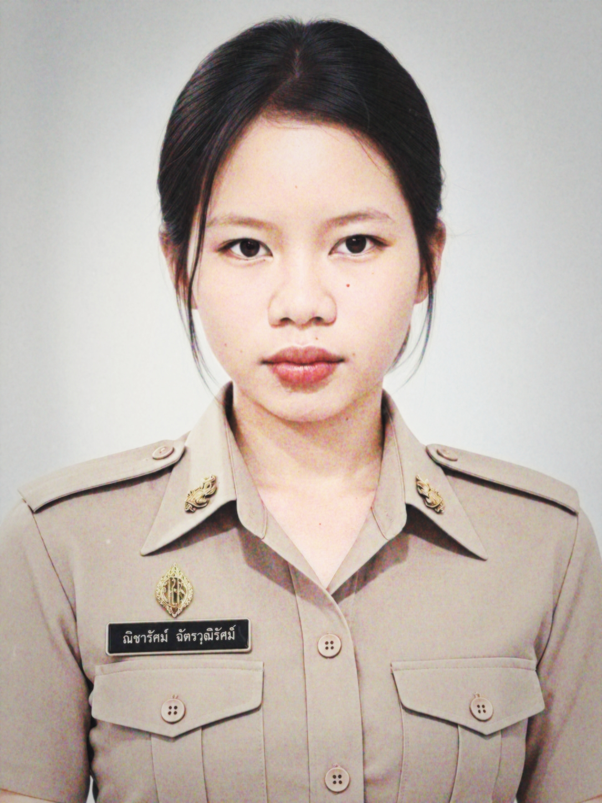
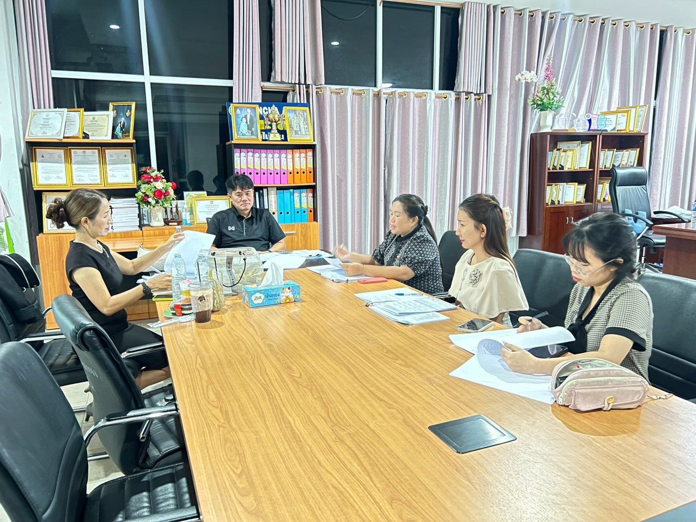
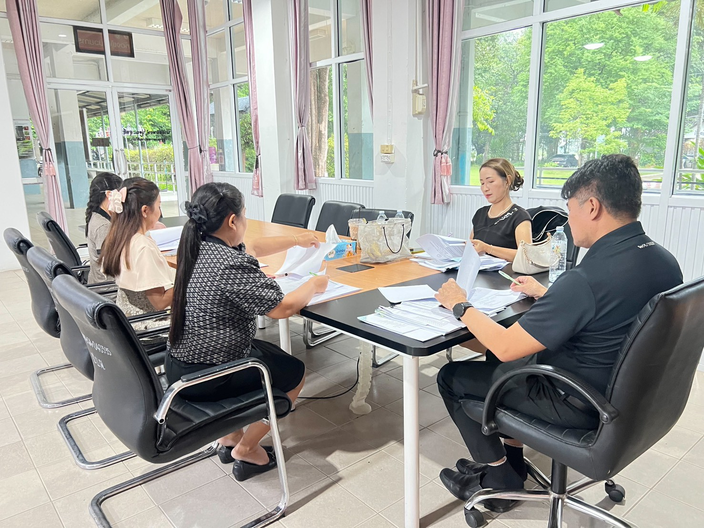

ข้อมูลผู้รับการประเมิน

- ชื่อ-สกุล
- นางสาวณิชารัศม์ ฉัตรวุฒิรัศมิ์
- ตำแหน่ง
- ครูช่วยสอน
- กลุ่มสาระการเรียนรู้
- กลุ่มสาระการเรียนรู้ภาษาต่างประเทศ
- สถานศึกษา
- โรงเรียนซับสมบูรณ์พิทยาลัย
- สังกัด
- สังกัดองค์การบริหารส่วนจังหวัดขอนแก่น
สรุปภาระงาน
ชั่วโมงสอน : 19 ชม./สัปดาห์
PA ส่วนที่ 1 : ข้อตกลงในการพัฒนางาน
หัวข้อประเด็นท้าทาย: การจัดการเรียนรู้เชิงรุกด้วยกิจกรรม Shopping Mission เพื่อพัฒนาทักษะการฟัง-พูดต่อรองราคาภาษาจีน
รายละเอียด: นักเรียนชั้นมัธยมศึกษาปีที่ ๒ รายวิชาภาษาจีน ๓ (จ ๒๒๒๐๑) หน่วยที่ ๓ ซื้อขาย 买卖 ท่องจำคำศัพท์และโครงสร้างประโยคต่อรองราคาได้ในระดับหนึ่ง แต่ยังขาดความมั่นใจและความคล่องแคล่วในการนำไปสนทนาจริง เนื่องจากเดิมเน้นท่องจำและทำแบบฝึกหัดในกระดาษ ขาดโอกาสฝึกพูดในสถานการณ์จำลอง จึงจัดการเรียนรู้เชิงรุก (Active Learning) ผ่านกิจกรรม Shopping Mission ให้นักเรียนสวมบทบาทแม่ค้า-ลูกค้า ต่อรองราคาจริงด้วยธนบัตรจำลอง เพื่อกระตุ้นความสนใจและพัฒนาทักษะฟัง-พูดให้ใช้สื่อสารได้จริง โดยมุ่งเน้นการ ปรับประยุกต์ รูปแบบการจัดการเรียนรู้ให้เหมาะสมกับผู้เรียน ชั้นมัธยมศึกษาปีที่ 2
ด้านที่ 1 : การจัดการเรียนรู้
ด้านที่ 2–3 : การดูแลผู้เรียน & PLC
ด้านที่ 2
ระบบดูแลช่วยเหลือผู้เรียน
กิจกรรม: เยี่ยมบ้าน + ประเมิน SDQ คัดกรองนักเรียนที่ปรึกษา ม.2/1 ครบทุกคน จัดกิจกรรมโฮมรูมทุกสัปดาห์ และประชุมผู้ปกครองชั้นเรียน (Classroom Meeting) ภาคเรียนละ 1 ครั้ง พร้อมช่องทางไลน์กลุ่มผู้ปกครอง
หลักฐาน: แบบบันทึกการเยี่ยมบ้าน, ผลประเมิน SDQ, ภาพถ่ายกิจกรรมโฮมรูม, รายงานการประชุมผู้ปกครอง
ด้านที่ 3
ชุมชนแห่งการเรียนรู้ทางวิชาชีพ (PLC)
กิจกรรม: เข้าร่วมกิจกรรมชุมชนแห่งการเรียนรู้ทางวิชาชีพ (PLC) ร่วมกับกลุ่มสาระการเรียนรู้ภาษาต่างประเทศและกลุ่มสาระอื่น อย่างน้อย 12 ชั่วโมง/ภาคเรียน เพื่อแลกเปลี่ยนเรียนรู้และแก้ปัญหาการจัดการเรียนรู้ร่วมกัน แล้วนำผลจาก PLC มาปรับปรุงแผนการจัดการเรียนรู้
หลักฐาน: ภาพถ่ายกิจกรรม PLC, บันทึก/รายงานผลการทำ PLC

